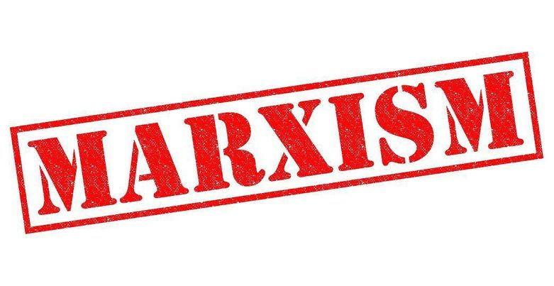

მარქსიზმი
მიშო თათულაშვილი
მარქსიზმი
მარქსიზმი — სოციალურ-ეკონომიკური ანალიზის მეთოდი და თეორიული მიდგომა, რომელიც ემყარება ისტორიული განვითარების მატერიალისტურ ინტერპრეტაციასა და სოციალური ტრანსფორმაციის დიალექტიკურ გააზრებას.

მისი სათავე
მარქსიზმი სათავეს იღებს კარლ მარქსის და ფრიდრიხ ენგელსის ფილოსოფიური, სოციოლოგიური და ეკონომიკური ხასიათის შრომებიდან, რომელთა მთავარი თემაა კაპიტალიზმის კრიტიკა.
კაპიტალიზმი
კაპიტალიზმი ეყრდნობა ორ კლასს: ბურჟუაზია, რომელიც ფლობს წარმოების საშუალებებს და პროლეტარიატს, რომელსაც გააჩნია მხოლოდ სამუშაო ძალა, რომელსაც ბურჟუაზია მისგან ყიდულობს. მიუხედავად იმისა, რომ კაპიტალისტური ეკონომიკა ექსპლუატაციაზეა დაყრდნობილი, მარქსი მას მაინც პროგრესულ მოვლენად განიხილავდა, რადგან განვითარების საბოლოო ეტაპს ხედავდა სოციალისტურ რევოლუციაში, რომლის შედეგადაც წარმოების საშუალებებზე დამყარდებოდა სოციალური/კოლექტიური კონტროლი. მარქსიზმის იდეოლოგია მატერიალისტურია, რადგან ის ეკონომიკურ საქმიანობას მიიჩნევს ყველა დანარჩენი ადამიანური საქმიანობის, პოლიტიკის ჩათვლით, საფუძვლად. შესაბამისად, ის ბურჟუაზიური კლასი, რომელიც ფლობს ეკონომიკურ სადავეებს ასევე დომინირებს პოლიტიკას რადგან ეკონომიკა არის პოლიტიკის საფუძველი. აქედან გამომდინარეობს მარქსისტული პოლიტიკური ეკონომიკის ჩარჩოებიც: სახელმწიფოები არიან ავტონომიურები. ისინი ახორციელებენ მმართველი კლასის, ანუ ბურჟუაზიის ინტერესებს. შესაბამისად, კონფლიქტები სახელმწიფოებს შორის, მარქსიზმის თვალსაზრისით არის იგივე კონფლიქტები სხვადასხვა სახელმწიფოების მმართველ კლასებს შორის.